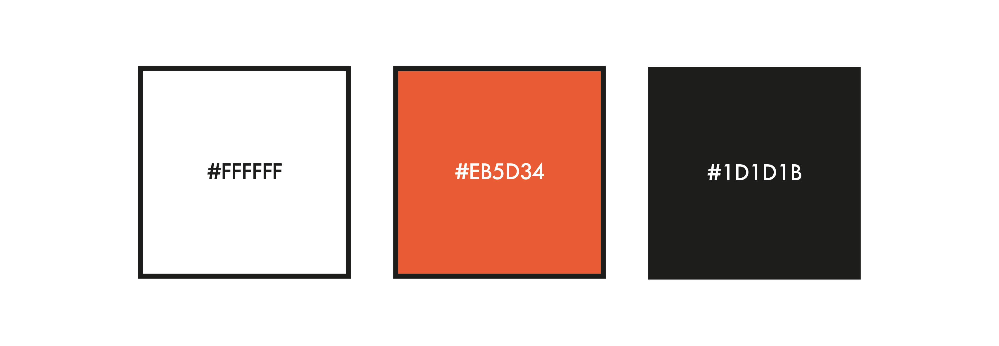
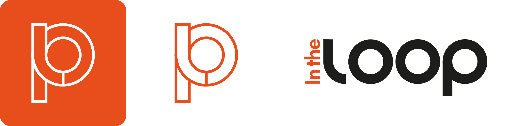

← Back to home
In the Loop
Date: 2020 • To view the full design process, including user research, ideation, inspiration, and low- to high-fidelity mock-ups click here.

The Challenge
Digital news consumption is fragmented, fast-paced, and often emotionally exhausting. Users are inundated with constant updates, breaking alerts, click-driven headlines, and algorithmically prioritised content that encourages habitual “doom-scrolling” rather than meaningful engagement.
The challenge was to reimagine how people interact with daily news and shifting the experience from overwhelming and reactive to one that is intentional and considered. Rather than simply redesigning an interface, the task required questioning why users engage (or disengage) with news in the first place.
How might we:
- Reduce cognitive overload while preserving depth and credibility?
- Encourage informed reading instead of passive scrolling?
- Create an experience that feels trustworthy, calm, and purposeful?
- Present content in a way that revitalises interest in digital news platforms?
Branding
Colour Palette
I drew inspiration from websites such as xxx and xxx, as well as traditional newspaper print. Because of this, the primary colour became a key element of the brand—used to capture attention and draw users toward the product. For the main content, however, I chose a classic black-on-white approach to prioritise accessibility and readability, using the primary colour sparingly to create accents and moments of emphasis throughout the user interface.

Logo and Wordmark
For the digital news product In The Loop, I designed a logo that reflects the idea of staying continuously informed. The concept of a “loop” is expressed by combining the letters L, O, O, and P into a continuous shape that forms a loop within the design. To make this work visually, I created a custom type treatment so the letters could connect and flow together in a cohesive way that supports the brand identity.

User Interface
These screens showcase the core mobile app experience, including the onboarding process. During onboarding, users select preferred sources, topics, and hashtags, which are used to shape a personalised news feed algorithm. This allows users to tailor content to their interests from the outset.
The app also includes a “Randomise” feature, enabling users to quickly refresh their feed and discover new or unexpected content. This interaction is demonstrated further in the product walkthrough below.

Product Walkthrough
The following walkthrough demonstrates the end-to-end user experience, from onboarding through to interacting with the personalised news feed.
It highlights how users are guided through selecting sources, topics, and hashtags, which are then used to shape a tailored content experience. The walkthrough also showcases key interactions within the feed, including browsing articles and using the “Randomise” feature to refresh content and encourage discovery.
This flow was designed to balance personalisation with exploration, ensuring users can quickly access relevant news while still being exposed to a diverse range of content.